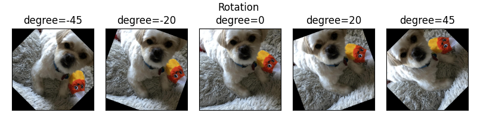

↑ Image Features
Input image features are transformed into a float valued tensors of size N x C x H x W (where N is the size of the
dataset, C is the number of channels, and H x W is the height and width of the image (can be specified by the user).
These tensors are added to HDF5 with a key that reflects the name of column in the dataset.
The column name is added to the JSON file, with an associated dictionary containing preprocessing information about the sizes of the resizing.
Supported Image Formats¶
The number of channels in the image is determined by the image format. The following table lists the supported image formats and the number of channels.
| Format | Number of channels |
|---|---|
| Grayscale | 1 |
| Grayscale with Alpha | 2 |
| RGB | 3 |
| RGB with Alpha | 4 |
Preprocessing¶
During preprocessing, raw image files are transformed into numpy arrays and saved in the hdf5 format.
Note
Images passed to an image encoder are expected to have the same size. If images are different sizes, by default they
will be resized to the dimensions of the first image in the dataset. Optionally, a resize_method together with a
target width and height can be specified in the feature preprocessing parameters, in which case all images will
be resized to the specified target size.
preprocessing:
missing_value_strategy: bfill
fill_value: null
height: null
width: null
num_channels: null
num_processes: 1
resize_method: interpolate
infer_image_num_channels: true
infer_image_dimensions: true
infer_image_max_height: 256
infer_image_max_width: 256
infer_image_sample_size: 100
standardize_image: null
in_memory: true
requires_equal_dimensions: false
Parameters:
missing_value_strategy(default:bfill) : What strategy to follow when there's a missing value in an image column Options:fill_with_const,fill_with_mode,bfill,ffill,drop_row.fill_value(default:null): The maximum number of most common tokens to be considered. If the data contains more than this amount, the most infrequent tokens will be treated as unknown.height(default:null): The image height in pixels. If this parameter is set, images will be resized to the specified height using the resize_method parameter. If None, images will be resized to the size of the first image in the dataset.width(default:null): The image width in pixels. If this parameter is set, images will be resized to the specified width using the resize_method parameter. If None, images will be resized to the size of the first image in the dataset.num_channels(default:null): Number of channels in the images. If specified, images will be read in the mode specified by the number of channels. If not specified, the number of channels will be inferred from the image format of the first valid image in the dataset.num_processes(default:1): Specifies the number of processes to run for preprocessing images.resize_method(default:interpolate): The method to use for resizing images. Options:crop_or_pad,interpolate.infer_image_num_channels(default:true): If true, then the number of channels in the dataset is inferred from a sample of the first image in the dataset. Options:true,false.infer_image_dimensions(default:true): If true, then the height and width of images in the dataset will be inferred from a sample of the first image in the dataset. Each image that doesn't conform to these dimensions will be resized according to resize_method. If set to false, then the height and width of images in the dataset will be specified by the user. Options:true,false.infer_image_max_height(default:256): If infer_image_dimensions is set, this is used as the maximum height of the images in the dataset.infer_image_max_width(default:256): If infer_image_dimensions is set, this is used as the maximum width of the images in the dataset.infer_image_sample_size(default:100): The sample size used for inferring dimensions of images in infer_image_dimensions.standardize_image(default:null): Standardize image by per channel mean centering and standard deviation scaling . Options:imagenet1k,null.in_memory(default:true): Defines whether image dataset will reside in memory during the training process or will be dynamically fetched from disk (useful for large datasets). In the latter case a training batch of input images will be fetched from disk each training iteration. Options:true,false.requires_equal_dimensions(default:false): If true, then width and height must be equal. Options:true,false.
Preprocessing parameters can also be defined once and applied to all image input features using the Type-Global Preprocessing section.
Input Features¶
The encoder parameters specified at the feature level are:
tied(defaultnull): name of another input feature to tie the weights of the encoder with. It needs to be the name of a feature of the same type and with the same encoder parameters.augmentation(defaultFalse): specifies image data augmentation operations to generate synthetic training data. More details on image augmentation can be found here.
Example image feature entry in the input features list:
name: image_column_name
type: image
tied: null
encoder:
type: stacked_cnn
The available encoder parameters are:
type(defaultstacked_cnn): the possible values arestacked_cnn,resnet,mlp_mixer,vit, and TorchVision Pretrained Image Classification models.
Encoder type and encoder parameters can also be defined once and applied to all image input features using the Type-Global Encoder section.
Encoders¶
Convolutional Stack Encoder (stacked_cnn)¶
Stack of 2D convolutional layers with optional normalization, dropout, and down-sampling pooling layers, followed by an optional stack of fully connected layers.
Convolutional Stack Encoder takes the following optional parameters:
encoder:
type: stacked_cnn
conv_dropout: 0.0
output_size: 128
num_conv_layers: null
out_channels: 32
conv_norm: null
fc_norm: null
fc_norm_params: null
conv_activation: relu
kernel_size: 3
stride: 1
padding_mode: zeros
padding: valid
dilation: 1
groups: 1
pool_function: max
pool_kernel_size: 2
pool_stride: null
pool_padding: 0
pool_dilation: 1
conv_norm_params: null
conv_layers: null
fc_dropout: 0.0
fc_activation: relu
fc_use_bias: true
fc_bias_initializer: zeros
fc_weights_initializer: xavier_uniform
num_fc_layers: 1
fc_layers: null
num_channels: null
conv_use_bias: true
Parameters:
conv_dropout(default:0.0) : Dropout rateoutput_size(default:128) : If output_size is not already specified in fc_layers this is the default output_size that will be used for each layer. It indicates the size of the output of a fully connected layer.num_conv_layers(default:null) : Number of convolutional layers to use in the encoder.out_channels(default:32): Indicates the number of filters, and by consequence the output channels of the 2d convolution. If out_channels is not already specified in conv_layers this is the default out_channels that will be used for each layer.conv_norm(default:null): If a norm is not already specified in conv_layers this is the default norm that will be used for each layer. It indicates the normalization applied to the activations and can be null, batch or layer. Options:batch,layer,null.fc_norm(default:null): If a norm is not already specified in fc_layers this is the default norm that will be used for each layer. It indicates the norm of the output and can be null, batch or layer. Options:batch,layer,null.fc_norm_params(default:null): Parameters used if norm is either batch or layer. For information on parameters used with batch see Torch's documentation on batch normalization or for layer see Torch's documentation on layer normalization.conv_activation(default:relu): If an activation is not already specified in conv_layers this is the default activation that will be used for each layer. It indicates the activation function applied to the output. Options:elu,leakyRelu,logSigmoid,relu,sigmoid,tanh,softmax,null.kernel_size(default:3): An integer or pair of integers specifying the kernel size. A single integer specifies a square kernel, while a pair of integers specifies the height and width of the kernel in that order (h, w). If a kernel_size is not specified in conv_layers this kernel_size that will be used for each layer.stride(default:1): An integer or pair of integers specifying the stride of the convolution along the height and width. If a stride is not already specified in conv_layers, specifies the default stride of the 2D convolutional kernel that will be used for each layer.padding_mode(default:zeros): If padding_mode is not already specified in conv_layers, specifies the default padding_mode of the 2D convolutional kernel that will be used for each layer. Options:zeros,reflect,replicate,circular.padding(default:valid): An int, pair of ints (h, w), or one of ['valid', 'same'] specifying the padding used forconvolution kernels.dilation(default:1): An int or pair of ints specifying the dilation rate to use for dilated convolution. If dilation is not already specified in conv_layers, specifies the default dilation of the 2D convolutional kernel that will be used for each layer.groups(default:1): Groups controls the connectivity between convolution inputs and outputs. When groups = 1, each output channel depends on every input channel. When groups > 1, input and output channels are divided into groups separate groups, where each output channel depends only on the inputs in its respective input channel group. in_channels and out_channels must both be divisible by groups.pool_function(default:max): Pooling function to use. Options:max,average,avg,mean.pool_kernel_size(default:2): An integer or pair of integers specifying the pooling size. If pool_kernel_size is not specified in conv_layers this is the default value that will be used for each layer.pool_stride(default:null): An integer or pair of integers specifying the pooling stride, which is the factor by which the pooling layer downsamples the feature map. Defaults to pool_kernel_size.pool_padding(default:0): An integer or pair of ints specifying pooling padding (h, w).pool_dilation(default:1): An integer or pair of ints specifying pooling dilation rate (h, w).conv_norm_params(default:null): Parameters used if conv_norm is either batch or layer.conv_layers(default:null): List of convolutional layers to use in the encoder.fc_dropout(default:0.0): Dropout ratefc_activation(default:relu): If an activation is not already specified in fc_layers this is the default activation that will be used for each layer. It indicates the activation function applied to the output. Options:elu,leakyRelu,logSigmoid,relu,sigmoid,tanh,softmax,null.fc_use_bias(default:true): Whether the layer uses a bias vector. Options:true,false.fc_bias_initializer(default:zeros): Initializer for the bias vector. Options:constant,dirac,eye,identity,kaiming_normal,kaiming_uniform,normal,ones,orthogonal,sparse,uniform,xavier_normal,xavier_uniform,zeros.fc_weights_initializer(default:xavier_uniform): Initializer for the weights matrix. Options:constant,dirac,eye,identity,kaiming_normal,kaiming_uniform,normal,ones,orthogonal,sparse,uniform,xavier_normal,xavier_uniform,zeros.num_fc_layers(default:1): The number of stacked fully connected layers.-
fc_layers(default:null): A list of dictionaries containing the parameters of all the fully connected layers. The length of the list determines the number of stacked fully connected layers and the content of each dictionary determines the parameters for a specific layer. The available parameters for each layer are: activation, dropout, norm, norm_params, output_size, use_bias, bias_initializer and weights_initializer. If any of those values is missing from the dictionary, the default one specified as a parameter of the encoder will be used instead. -
num_channels(default:null): Number of channels to use in the encoder. conv_use_bias(default:true): If bias not already specified in conv_layers, specifies if the 2D convolutional kernel should have a bias term. Options:true,false.
MLP-Mixer Encoder¶
Encodes images using MLP-Mixer, as described in MLP-Mixer: An all-MLP Architecture for Vision. MLP-Mixer divides the image into equal-sized patches, applying fully connected layers to each patch to compute per-patch representations (tokens) and combining the representations with fully-connected mixer layers.
The MLP-Mixer Encoder takes the following optional parameters:
encoder:
type: mlp_mixer
dropout: 0.0
num_layers: 8
patch_size: 16
num_channels: null
embed_size: 512
token_size: 2048
channel_dim: 256
avg_pool: true
Parameters:
dropout(default:0.0) : Dropout rate.num_layers(default:8) : The depth of the network (the number of Mixer blocks).-
patch_size(default:16): The image patch size. Each patch is patch_size² pixels. Must evenly divide the image width and height. -
num_channels(default:null): Number of channels to use in the encoder. embed_size(default:512): The patch embedding size, the output size of the mixer if avg_pool is true.token_size(default:2048): The per-patch embedding size.channel_dim(default:256): Number of channels in hidden layer.avg_pool(default:true): If true, pools output over patch dimension, outputs a vector of shape (embed_size). If false, the output tensor is of shape (n_patches, embed_size), where n_patches is img_height x img_width / patch_size². Options:true,false.
TorchVision Pretrained Model Encoders¶
Twenty TorchVision pretrained image classification models are available as Ludwig image encoders. The available models are:
AlexNetConvNeXtDenseNetEfficientNetEfficientNetV2GoogLeNetInception V3MaxVitMNASNetMobileNet V2MobileNet V3RegNetResNetResNeXtShuffleNet V2SqueezeNetSwinTransformerVGGVisionTransformerWide ResNet
See TorchVison documentation for more details.
Ludwig encoders parameters for TorchVision pretrained models:
AlexNet¶
encoder:
type: alexnet
use_pretrained: true
trainable: true
model_cache_dir: null
model_variant: base
Parameters:
use_pretrained(default:true) : Download model weights from pre-trained model. Options:true,false.-
trainable(default:true) : Is the encoder trainable. Options:true,false. -
model_cache_dir(default:null): Directory path to cache pretrained model weights. -
model_variant(default:base): Pretrained model variant to use. Options:base.
ConvNeXt¶
encoder:
type: convnext
use_pretrained: true
trainable: true
model_cache_dir: null
model_variant: base
Parameters:
use_pretrained(default:true) : Download model weights from pre-trained model. Options:true,false.-
trainable(default:true) : Is the encoder trainable. Options:true,false. -
model_cache_dir(default:null): Directory path to cache pretrained model weights. -
model_variant(default:base): Pretrained model variant to use. Options:tiny,small,base,large.
DenseNet¶
encoder:
type: densenet
use_pretrained: true
trainable: true
model_cache_dir: null
model_variant: 121
Parameters:
use_pretrained(default:true) : Download model weights from pre-trained model. Options:true,false.-
trainable(default:true) : Is the encoder trainable. Options:true,false. -
model_cache_dir(default:null): Directory path to cache pretrained model weights. -
model_variant(default:121): Pretrained model variant to use. Options:121,161,169,201.
EfficientNet¶
encoder:
type: efficientnet
use_pretrained: true
trainable: true
model_cache_dir: null
model_variant: b0
Parameters:
use_pretrained(default:true) : Download model weights from pre-trained model. Options:true,false.-
trainable(default:true) : Is the encoder trainable. Options:true,false. -
model_cache_dir(default:null): Directory path to cache pretrained model weights. -
model_variant(default:b0): Pretrained model variant to use. Options:b0,b1,b2,b3,b4,b5,b6,b7,v2_,v2_m,v2_l.
GoogLeNet¶
encoder:
type: googlenet
use_pretrained: true
trainable: true
model_cache_dir: null
model_variant: base
Parameters:
use_pretrained(default:true) : Download model weights from pre-trained model. Options:true,false.-
trainable(default:true) : Is the encoder trainable. Options:true,false. -
model_cache_dir(default:null): Directory path to cache pretrained model weights. -
model_variant(default:base): Pretrained model variant to use. Options:base.
Inception V3¶
encoder:
type: inceptionv3
use_pretrained: true
trainable: true
model_cache_dir: null
model_variant: base
Parameters:
use_pretrained(default:true) : Download model weights from pre-trained model. Options:true,false.-
trainable(default:true) : Is the encoder trainable. Options:true,false. -
model_cache_dir(default:null): Directory path to cache pretrained model weights. -
model_variant(default:base): Pretrained model variant to use. Options:base.
MaxVit¶
encoder:
type: maxvit
use_pretrained: true
trainable: true
model_cache_dir: null
model_variant: t
Parameters:
use_pretrained(default:true) : Download model weights from pre-trained model. Options:true,false.-
trainable(default:true) : Is the encoder trainable. Options:true,false. -
model_cache_dir(default:null): Directory path to cache pretrained model weights. -
model_variant(default:t): Pretrained model variant to use. Options:t.
MNASNet¶
encoder:
type: mnasnet
use_pretrained: true
trainable: true
model_cache_dir: null
model_variant: '0_5'
Parameters:
use_pretrained(default:true) : Download model weights from pre-trained model. Options:true,false.-
trainable(default:true) : Is the encoder trainable. Options:true,false. -
model_cache_dir(default:null): Directory path to cache pretrained model weights. -
model_variant(default:0_5): Pretrained model variant to use. Options:0_5,0_75,1_0,1_3.
MobileNet V2¶
encoder:
type: mobilenetv2
use_pretrained: true
trainable: true
model_cache_dir: null
model_variant: base
Parameters:
use_pretrained(default:true) : Download model weights from pre-trained model. Options:true,false.-
trainable(default:true) : Is the encoder trainable. Options:true,false. -
model_cache_dir(default:null): Directory path to cache pretrained model weights. -
model_variant(default:base): Pretrained model variant to use. Options:base.
MobileNet V3¶
encoder:
type: mobilenetv3
use_pretrained: true
trainable: true
model_cache_dir: null
model_variant: small
Parameters:
use_pretrained(default:true) : Download model weights from pre-trained model. Options:true,false.-
trainable(default:true) : Is the encoder trainable. Options:true,false. -
model_cache_dir(default:null): Directory path to cache pretrained model weights. -
model_variant(default:small): Pretrained model variant to use. Options:small,large.
RegNet¶
encoder:
type: regnet
use_pretrained: true
trainable: true
model_cache_dir: null
model_variant: x_1_6gf
Parameters:
use_pretrained(default:true) : Download model weights from pre-trained model. Options:true,false.-
trainable(default:true) : Is the encoder trainable. Options:true,false. -
model_cache_dir(default:null): Directory path to cache pretrained model weights. -
model_variant(default:x_1_6gf): Pretrained model variant to use. Options:x_1_6gf,x_16gf,x_32gf,x_3_2gf,x_400mf,x_800mf,x_8gf,y_128gf,y_16gf,y_1_6gf,y_32gf,y_3_2gf,y_400mf,y_800mf,y_8gf.
ResNet¶
encoder:
type: resnet
use_pretrained: true
trainable: true
model_cache_dir: null
model_variant: 50
Parameters:
use_pretrained(default:true) : Download model weights from pre-trained model. Options:true,false.-
trainable(default:true) : Is the encoder trainable. Options:true,false. -
model_cache_dir(default:null): Directory path to cache pretrained model weights. -
model_variant(default:50): Pretrained model variant to use. Options:18,34,50,101,152.
ResNeXt¶
encoder:
type: resnext
use_pretrained: true
trainable: true
model_cache_dir: null
model_variant: 50_32x4d
Parameters:
use_pretrained(default:true) : Download model weights from pre-trained model. Options:true,false.-
trainable(default:true) : Is the encoder trainable. Options:true,false. -
model_cache_dir(default:null): Directory path to cache pretrained model weights. -
model_variant(default:50_32x4d): Pretrained model variant to use. Options:50_32x4d,101_32x8d,101_64x4d.
ShuffleNet V2¶
encoder:
type: shufflenet_v2
use_pretrained: true
trainable: true
model_cache_dir: null
model_variant: x0_5
Parameters:
use_pretrained(default:true) : Download model weights from pre-trained model. Options:true,false.-
trainable(default:true) : Is the encoder trainable. Options:true,false. -
model_cache_dir(default:null): Directory path to cache pretrained model weights. -
model_variant(default:x0_5): Pretrained model variant to use. Options:x0_5,x1_0,x1_5,x2_0.
SqueezeNet¶
encoder:
type: squeezenet
use_pretrained: true
trainable: true
model_cache_dir: null
model_variant: '1_0'
Parameters:
use_pretrained(default:true) : Download model weights from pre-trained model. Options:true,false.-
trainable(default:true) : Is the encoder trainable. Options:true,false. -
model_cache_dir(default:null): Directory path to cache pretrained model weights. -
model_variant(default:1_0): Pretrained model variant to use. Options:1_0,1_1.
SwinTransformer¶
encoder:
type: swin_transformer
use_pretrained: true
trainable: true
model_cache_dir: null
model_variant: t
Parameters:
use_pretrained(default:true) : Download model weights from pre-trained model. Options:true,false.-
trainable(default:true) : Is the encoder trainable. Options:true,false. -
model_cache_dir(default:null): Directory path to cache pretrained model weights. -
model_variant(default:t): Pretrained model variant to use. Options:t,s,b.
VGG¶
encoder:
type: vgg
use_pretrained: true
trainable: true
model_cache_dir: null
model_variant: 11
Parameters:
use_pretrained(default:true) : Download model weights from pre-trained model. Options:true,false.-
trainable(default:true) : Is the encoder trainable. Options:true,false. -
model_cache_dir(default:null): Directory path to cache pretrained model weights. -
model_variant(default:11): Pretrained model variant to use.
VisionTransformer¶
encoder:
type: vit
use_pretrained: true
trainable: true
model_cache_dir: null
model_variant: b_16
Parameters:
use_pretrained(default:true) : Download model weights from pre-trained model. Options:true,false.-
trainable(default:true) : Is the encoder trainable. Options:true,false. -
model_cache_dir(default:null): Directory path to cache pretrained model weights. -
model_variant(default:b_16): Pretrained model variant to use. Options:b_16,b_32,l_16,l_32,h_14.
Wide ResNet¶
encoder:
type: wide_resnet
use_pretrained: true
trainable: true
model_cache_dir: null
model_variant: '50_2'
Parameters:
use_pretrained(default:true) : Download model weights from pre-trained model. Options:true,false.-
trainable(default:true) : Is the encoder trainable. Options:true,false. -
model_cache_dir(default:null): Directory path to cache pretrained model weights. -
model_variant(default:50_2): Pretrained model variant to use. Options:50_2,101_2.
Note:
- At this time Ludwig supports only the
DEFAULTpretrained weights, which are the best available weights for a specific model. More details onDEFAULTweights can be found in this blog post. - Some TorchVision pretrained models consume large amounts of memory. These
model_variantrequired more than 12GB of memory: efficientnet_torch:b7regnet_torch:y_128gfvit_torch:h_14
Deprecated Encoders (planned to remove in v0.8)¶
Legacy ResNet Encoder¶
DEPRECATED: This encoder is deprecated and will be removed in a future release. Please use the equivalent TorchVision ResNet encoder instead.
Implements ResNet V2 as described in Identity Mappings in Deep Residual Networks.
The ResNet encoder takes the following optional parameters:
encoder:
type: _resnet_legacy
dropout: 0.0
output_size: 128
activation: relu
norm: null
first_pool_kernel_size: null
first_pool_stride: null
use_bias: true
bias_initializer: zeros
weights_initializer: xavier_uniform
norm_params: null
num_fc_layers: 1
fc_layers: null
resnet_size: 50
num_channels: null
out_channels: 32
kernel_size: 3
conv_stride: 1
batch_norm_momentum: 0.9
batch_norm_epsilon: 0.001
Parameters:
dropout(default:0.0) : Dropout rateoutput_size(default:128) : if output_size is not already specified in fc_layers this is the default output_size that will be used for each layer. It indicates the size of the output of a fully connected layer.activation(default:relu): if an activation is not already specified in fc_layers this is the default activation that will be used for each layer. It indicates the activation function applied to the output. Options:elu,leakyRelu,logSigmoid,relu,sigmoid,tanh,softmax,null.norm(default:null): if a norm is not already specified in fc_layers this is the default norm that will be used for each layer. It indicates the norm of the output and can be null, batch or layer. Options:batch,layer,null.first_pool_kernel_size(default:null): Pool size to be used for the first pooling layer. If none, the first pooling layer is skipped.first_pool_stride(default:null): Stride for first pooling layer. If null, defaults to first_pool_kernel_size.use_bias(default:true): Whether the layer uses a bias vector. Options:true,false.bias_initializer(default:zeros): initializer for the bias vector. Options:constant,dirac,eye,identity,kaiming_normal,kaiming_uniform,normal,ones,orthogonal,sparse,uniform,xavier_normal,xavier_uniform,zeros.weights_initializer(default:xavier_uniform): Initializer for the weights matrix. Options:constant,dirac,eye,identity,kaiming_normal,kaiming_uniform,normal,ones,orthogonal,sparse,uniform,xavier_normal,xavier_uniform,zeros.norm_params(default:null): parameters used if norm is either batch or layer. For information on parameters used with batch see Torch's documentation on batch normalization or for layer see Torch's documentation on layer normalization.num_fc_layers(default:1): The number of stacked fully connected layers.-
fc_layers(default:null): A list of dictionaries containing the parameters of all the fully connected layers. The length of the list determines the number of stacked fully connected layers and the content of each dictionary determines the parameters for a specific layer. The available parameters for each layer are: activation, dropout, norm, norm_params, output_size, use_bias, bias_initializer and weights_initializer. If any of those values is missing from the dictionary, the default one specified as a parameter of the encoder will be used instead. -
resnet_size(default:50): The size of the ResNet model to use. num_channels(default:null): Number of channels to use in the encoder.out_channels(default:32): Indicates the number of filters, and by consequence the output channels of the 2d convolution. If out_channels is not already specified in conv_layers this is the default out_channels that will be used for each layer.kernel_size(default:3): An integer or pair of integers specifying the kernel size. A single integer specifies a square kernel, while a pair of integers specifies the height and width of the kernel in that order (h, w). If a kernel_size is not specified in conv_layers this kernel_size that will be used for each layer.conv_stride(default:1): An integer or pair of integers specifying the stride of the initial convolutional layer.batch_norm_momentum(default:0.9): Momentum of the batch norm running statistics.batch_norm_epsilon(default:0.001): Epsilon of the batch norm.
Legacy Vision Transformer Encoder¶
DEPRECATED: This encoder is deprecated and will be removed in a future release. Please use the equivalent TorchVision VisionTransformer encoder instead.
Encodes images using a Vision Transformer as described in An Image is Worth 16x16 Words: Transformers for Image Recognition at Scale.
Vision Transformer divides the image into equal-sized patches, uses a linear transformation to encode each flattened patch, then applies a deep transformer architecture to the sequence of encoded patches.
The Vision Transformer Encoder takes the following optional parameters:
encoder:
type: _vit_legacy
hidden_dropout_prob: 0.1
attention_probs_dropout_prob: 0.1
trainable: true
use_pretrained: true
pretrained_model: google/vit-base-patch16-224
hidden_size: 768
hidden_act: gelu
patch_size: 16
initializer_range: 0.02
num_hidden_layers: 12
num_attention_heads: 12
intermediate_size: 3072
layer_norm_eps: 1.0e-12
gradient_checkpointing: false
Parameters:
hidden_dropout_prob(default:0.1) : The dropout rate for all fully connected layers in the embeddings, encoder, and pooling.attention_probs_dropout_prob(default:0.1) : The dropout rate for the attention probabilities.trainable(default:true) : Is the encoder trainable. Options:true,false.use_pretrained(default:true) : Use pre-trained model weights from Hugging Face. Options:true,false.pretrained_model(default:google/vit-base-patch16-224) : The name of the pre-trained model to use.hidden_size(default:768): Dimensionality of the encoder layers and the pooling layer.hidden_act(default:gelu): Hidden layer activation, one of gelu, relu, selu or gelu_new. Options:relu,gelu,selu,gelu_new.patch_size(default:16): The image patch size. Each patch is patch_size² pixels. Must evenly divide the image width and height.-
initializer_range(default:0.02): The standard deviation of the truncated_normal_initializer for initializing all weight matrices. -
num_hidden_layers(default:12): Number of hidden layers in the Transformer encoder. num_attention_heads(default:12): Number of attention heads in each attention layer.intermediate_size(default:3072): Dimensionality of the intermediate (i.e., feed-forward) layer in the Transformer encoder.layer_norm_eps(default:1e-12): The epsilon used by the layer normalization layers.gradient_checkpointing(default:false): Options:true,false.
Image Augmentation¶
Image augmentation is a technique used to increase the diversity of a training dataset by applying random transformations to the images. The goal is to train a model that is robust to the variations in the training data.
Augmentation is specified by the augmentation section in the image feature configuration and can be specified in one of the following ways:
Boolean: False (Default) No augmentation is applied to the images.
augmentation: False
Boolean: True The following augmentation methods are applied to the images: random_horizontal_flip and random_rotate.
augmentation: True
List of Augmentation Methods One or more of the following augmentation methods are applied to the images in the order specified by the user: random_horizontal_flip, random_vertical_flip, random_rotate, random_blur, random_brightness, and random_contrast. The following is an illustrative example.
augmentation:
- type: random_horizontal_flip
- type: random_vertical_flip
- type: random_rotate
degree: 10
- type: random_blur
kernel_size: 3
- type: random_brightness
min: 0.5
max: 2.0
- type: random_contrast
min: 0.5
max: 2.0
Augmentation is applied to the batch of images in the training set only. The validation and test sets are not augmented.
Following illustrates how augmentation affects an image:

Horizontal Flip: Image is randomly flipped horizontally.
type: random_horizontal_flip

Vertical Flip: Image is randomly flipped vertically.
type: random_vertical_flip

Rotate: Image is randomly rotated by an amount in the range [-degree, +degree]. degree must be a positive integer.
type: random_rotate
degree: 15
Parameters:
degree(default:15): Range of angle for random rotation, i.e., [-degree, +degree].
Following shows the effect of rotating an image:

Blur: Image is randomly blurred using a Gaussian filter with kernel size specified by the user. The kernel_size must be a positive, odd integer.
type: random_blur
kernel_size: 3
Parameters:
kernel_size(default:3): Kernel size for random blur.
Following shows the effect of blurring an image with various kernel sizes:

Adjust Brightness: Image brightness is adjusted by a factor randomly selected in the range [min, max]. Both min and max must be a float greater than 0, with min less than max.
type: random_brightness
min: 0.5
max: 2.0
Parameters:
min(default:0.5): Minimum factor for random brightness.max(default:2.0): Maximum factor for random brightness.
Following shows the effect of brightness adjustment with various factors:

Adjust Contrast: Image contrast is adjusted by a factor randomly selected in the range [min, max]. Both min and max must be a float greater than 0, with min less than max.
type: random_contrast
min: 0.5
max: 2.0
Parameters:
min(default:0.5): Minimum factor for random brightness.max(default:2.0): Maximum factor for random brightness.
Following shows the effect of contrast adjustment with various factors:
Illustrative Examples of Image Feature Configuration with Augmentation
name: image_column_name
type: image
encoder:
type: resnet
model_variant: 18
use_pretrained: true
pretrained_cache_dir: None
trainable: true
augmentation: false
name: image_column_name
type: image
encoder:
type: stacked_cnn
augmentation: true
name: image_column_name
type: image
encoder:
type: alexnet
augmentation:
- type: random_horizontal_flip
- type: random_rotate
degree: 10
- type: random_blur
kernel_size: 3
- type: random_brightness
min: 0.5
max: 2.0
- type: random_contrast
min: 0.5
max: 2.0
- type: random_vertical_flip
Output Features¶
There are no image decoders at the moment (WIP), so images cannot be used as output features.